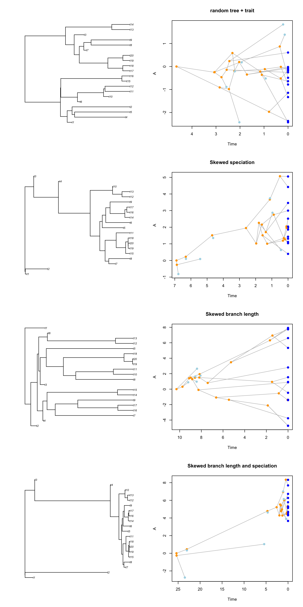

4 Making modifiers with make.modifiers()
TODO: just ideas so far
4.1 The branch length function (branch.length)
A branch length function that is constant
constant.brlen <- function(bd.params = NULL,
n.taxa = NULL,
parent.lineage = NULL,
trait.values = NULL,
modify.fun = NULL) {
return(1)
}
constant_brlen <- dads(bd.params = list(extinction = 0.25),
stop.rule = list(max.living = 20),
traits = make.traits(),
modifiers = make.modifiers(
branch.length = constant.brlen))
plot(constant_brlen, main = "constant branch length")4.2 The speciation function (speciation)
random.brlen <- function(bd.params = NULL,
n.taxa = NULL,
parent.lineage = NULL,
trait.values = NULL,
modify.fun = NULL) {
return(runif(1))
}
random.spec <- function(bd.params = NULL,
n.taxa = NULL,
parent.lineage = NULL,
trait.values = NULL,
modify.fun = NULL) {
return(sample(c(TRUE, FALSE), 1))
}
set.seed(1)
yule_tree <- dads(bd.params = list(extinction = 0),
stop.rule = list(max.living = 20),
traits = make.traits(),
modifiers = make.modifiers(
branch.length = random.brlen,
speciation = random.spec))
plot(yule_tree, main = "a (failing) yule(ish) tree")4.3 The condition function (condition)
4.4 The modify function (modify)
4.5 Combining and editing modifiers (add)
4.6 Testing modifiers (test)
4.7 Demo runnable
bd.params <- list(speciation = 1, extinction = 1/3)
traits <- make.traits()
stop.rule <- list(max.taxa = 20, max.living = Inf, max.time = Inf)
modifiers <- NULL
events <- NULL
null.error <- NULL
## modifiers
condition <- function(trait.values, parent.lineage) return(parent.traits(trait.values, parent.lineage) < 0)
modify <- function(x) return(x * 20)
## Setting up the different modifiers
modify_speciation <- make.modifiers(speciation = speciation.trait,
condition = condition,
modify = modify)
modify_brlen <- make.modifiers(branch.length = branch.length.trait,
condition = condition,
modify = modify)
modify_speciation_brlen <- make.modifiers(branch.length = branch.length.trait,
speciation = speciation.trait,
condition = condition,
modify = modify)
## Test normal (no modifiers)
set.seed(1)
test <- dads(bd.params, stop.rule, traits, null.error = 20)
par(mfrow = c(4,2))
plot(test$tree)
plot.dads(test, main = "random tree + trait")
## Test with modifiers
set.seed(1)
trait_table <- NULL
test <- dads(bd.params, stop.rule, traits,
modifiers = modify_speciation,
null.error = 20)
plot(test$tree)
plot.dads(test, main = "Skewed speciation")
set.seed(1)
trait_table <- NULL
test <- dads(bd.params, stop.rule, traits,
modifiers = modify_brlen,
null.error = 20)
plot(test$tree)
plot.dads(test, main = "Skewed branch length")
set.seed(1)
trait_table <- NULL
test <- dads(bd.params, stop.rule, traits,
modifiers = modify_speciation_brlen,
null.error = 20)
plot(test$tree)
plot.dads(test, main = "Skewed branch length and speciation")